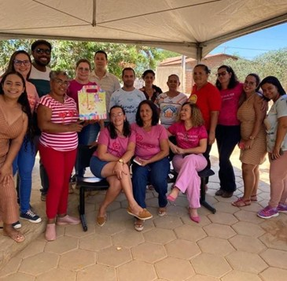
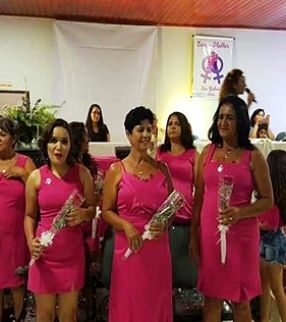

Rosas do Sertão
O projeto Rosas do Sertão atua no acolhimento de mulheres em tratamento contra o câncer, especialmente aquelas que precisam se deslocar para outras cidades em busca de atendimento. A iniciativa oferece apoio emocional, escuta qualificada e mobilização de recursos, garantindo mais dignidade durante um momento de extrema vulnerabilidade. Além disso, promove ações de conscientização, como campanhas do Outubro Rosa, fortalecendo a autoestima e criando uma rede de apoio entre as participantes.


Impacto
+120
mulheres atendidas
+40
ações de conscientização realizadas
Como funciona
O projeto oferece acolhimento por meio de rodas de conversa, escuta ativa e apoio emocional às mulheres em tratamento contra o câncer. Também realiza campanhas de conscientização, como o Outubro Rosa, fortalecendo a autoestima e criando uma rede de apoio entre as participantes.
Como ajudar
Você pode contribuir com doações ou apoiar na divulgação das ações, ajudando a ampliar o alcance do projeto e fortalecer a rede de apoio às mulheres atendidas.
Ajude a ampliar o alcance desse projeto.
Quero ajudar